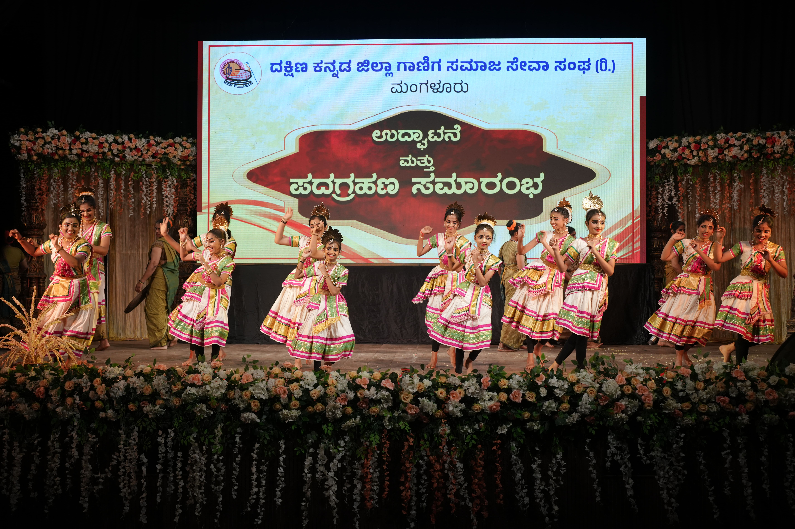
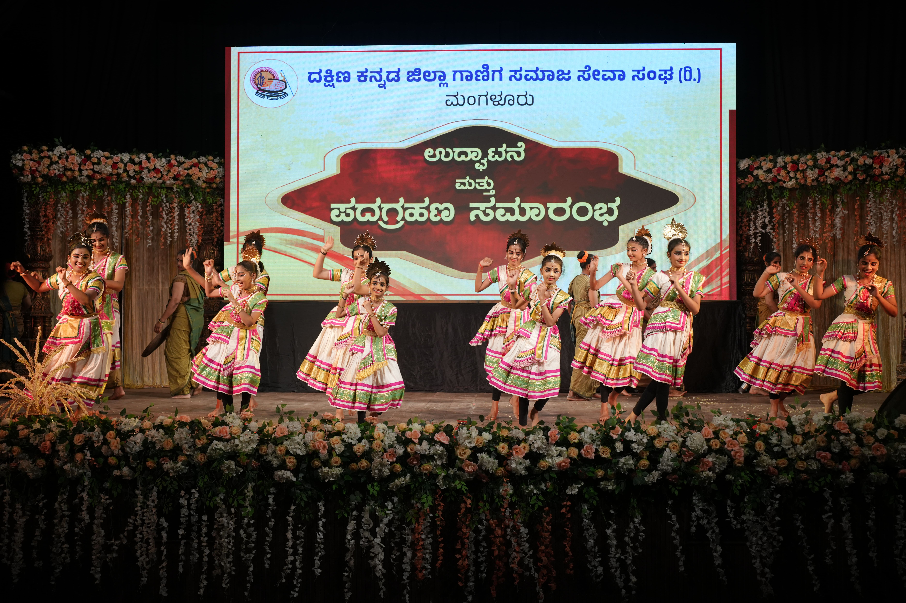

❯
❯
ದಕ್ಷಿಣ ಕನ್ನಡ ಜಿಲ್ಲಾ ಗಾಣಿಗ ಸಮಾಜ ಸೇವಾ ಸಂಘ (ರಿ.) ಮಂಗಳೂರು
ಶ್ರೀ ಪೆರ್ನೆ ಮುಚ್ಚಿಲೋಟ್ ಭಗವತೀ ಕ್ಷೇತ್ರಕ್ಕೊಳಪಟ್ಟ, ದಕ್ಷಿಣ ಕನ್ನಡ ಜಿಲ್ಲೆಯ ಎಲ್ಲಾ ಬಂಧುಗಳನ್ನು ಒಟ್ಟು ಸೇರಿಸಿ ದಕ್ಷಿಣ ಕನ್ನಡ ಜಿಲ್ಲಾ ಗಾಣಿಗ ಸಮಾಜ ಸೇವಾ ಸಂಘ (ರಿ ) ಮಂಗಳೂರು ಎಂಬ ಹೆಸರಿನಲ್ಲಿ ಸಂಸ್ಥೆಯನ್ನು ಸ್ಥಾಪಿಸಲಾಗಿದೆ. ಸಾಮಾಜಿಕ ಮುಂದಾಳು, ಸಮಾಜ ಸೇವೆಗಾಗಿ ಜಿಲ್ಲಾ ರಾಜ್ಯೋತ್ಸವ ಪ್ರಶಸ್ತಿ ಪುರಸ್ಕೃತ ಹಾಗೂ ಲಯನ್ಸ್ ಕ್ಲಬ್, ರಾಜಕೀಯ ಕ್ಷೇತ್ರದಲ್ಲಿ ವಿವಿಧ ಜವಾಬ್ದಾರಿಗಳನ್ನು ನಿಬಾಯಿಸಿ ಸಕ್ರೀಯರಾದ ಸರಳ ಸಜ್ಜನಿಕೆಯ ವ್ಯಕ್ತಿತ್ವದ ಸಮರ್ಥ ನಾಯಕರಾದ ಶ್ರೀ ಕೆ.ರಾಮ ಮುಗ್ರೋಡಿ ಇವರನ್ನು ಸರ್ವಾನುಮತದಿಂದ ಅಧ್ಯಕ್ಷರನ್ನಾಗಿ ಆಯ್ಕೆ ಮಾಡಲಾಗಿದೆ. ದ.ಕ. ಜಿಲ್ಲೆಯಲ್ಲಿರುವ ಐದು ತಾಲೂಕು ಸಂಘಗಳ ಪ್ರಮುಖರನ್ನು ಸೇರಿಸಿ ಈ ಜಿಲ್ಲಾ ಮಟ್ಟದ ಸಂಘವನ್ನು ರಚಿಸಲಾಗಿದೆ.
ಸಂಸ್ಥೆಯ ಧ್ಯೇಯ ಮತ್ತು ಉದ್ದೇಶಗಳು

ದಕ್ಷಿಣ ಕನ್ನಡ ಜಿಲ್ಲಾ ಗಾಣಿಗ ಸಮಾಜ ಸೇವಾ ಸಂಘ
Register No: DRDK/SOR/113/2024-2025
ಪ್ರಿಯ ಸಮುದಾಯ ಭಾಂದವರೇ,
ನಮ್ಮ ಸಮಾಜವು ಯಕ್ಷಗಾನ ಕಲೆ, ಕ್ರೀಡಾಕ್ಷೇತ್ರ, ಹಾಗೂ ಔದ್ಯೋಗಿಕವಾಗಿ ಬಹಳಷ್ಟು ಮುಂದುವರೆದಿದೆ ಎಂದು ಹೇಳಲು ಬಹಳ ಹೆಮ್ಮೆ ಎನಿಸುತ್ತದೆ. ಹಲವಾರು ತಲೆಮಾರುಗಳಿಂದ ನಮ್ಮ ಸಮಾಜವು ಇಂದಿಗೂ ಪಾಲಿಸಿಕೊಂಡು ಬರುತ್ತಿರುವ ಆಚಾರ ವಿಚಾರಗಳು ಸರಳ ಸಾಮೂಹಿಕ ವಿವಾಹ ಪದ್ಧತಿ ಇತರ ಸಮಾಜಕ್ಕೆ ಮಾದರಿಯಾಗಿದೆ. ನಮ್ಮ ಸಮಾಜ ಸಂಘಟಿತವಾಗಿ ರಾಜಕೀಯ, ಸಾಮಾಜಿಕ, ಶೈಕ್ಷಣಿಕ ಹಾಗೂ ಸಾಂಸ್ಕೃತಿಕ ಕ್ಷೇತ್ರಗಳಲ್ಲಿ ಮುಂದುವರಿಯುವಂತಾಗಬೇಕು. ಸಮಾಜದಲ್ಲಿ ಆರ್ಥಿಕವಾಗಿ ಹಿಂದುಳಿದವರಿಗೆ ಸರಕಾರದಿಂದ ಸಿಗುವ ಸವಲತ್ತುಗಳನ್ನು ದೊರಕಿಸಿ ಕೊಡಲು ಸಹಕರಿವಂತಾಗಬೇಕು. ಆರ್ಥಿಕವಾಗಿ ಹಿಂದುಳಿದ ಪ್ರತಿಭಾವಂತ ವಿದ್ಯಾರ್ಥಿಗಳಿಗೆ ಅರ್ಥಿಕ ನೆರವು ನೀಡುವಂತಾಗಬೇಕು. ನಮ್ಮ ಸಮಾಜದಲ್ಲಿ ಅತ್ಯುತ್ತಮ್ಮ ಪ್ರತಿಭೆ ಗಳಿದ್ದು, ಅವರಿಗೆ ಉತ್ತಮ ವೇದಿಕೆಯನ್ನು ಕಲ್ಪಿಸಿ ಕೊಡುವಂತಾಗಬೇಕು. ಈ ಎಲ್ಲಾ ಮುಂದಾಲೋಚನೆಗಳನ್ನು ಪರಿಗಣಿಸಿ ದಕ್ಷಿಣ ಕನ್ನಡ ಜಿಲ್ಲೆಯ ಐದು ಸಮಾಜ ಸೇವಾ ಸಂಘಗಳ ಪ್ರಮುಖರನ್ನು ಪದಾಧಿಕರಿಗಳನ್ನಾಗಿ ನೇಮಿಸಿ ದಕ್ಷಿಣ ಕನ್ನಡ ಜಿಲ್ಲಾ ಗಾಣಿಗ ಸಮಾಜ ಸೇವಾ ಸಂಘವನ್ನು ದಿನಾಂಕ 29-12-2024 ರಂದು ಮಂಗಳೂರಿನ ಪುರಭವನದಲ್ಲಿ ವಿವಿಧ ರಾಜಕೀಯ ನಾಯಕರ ಸಮ್ಮುಖದಲ್ಲಿ ವಿಜೃಂಭಣೆಯಿಂದ ಉದ್ಘಾಟಿಸಲಾಯಿತು. ಐದು ತಾಲೂಕು ಸಂಘಗಳ ಒಟ್ಟುಗೂಡುವಿಕೆಯಿಂದ, 'ಪಂಚಮಂ ಕಾರ್ಯಸಿದ್ಧಿ' ಎಂಬಂತೆ ನಮ್ಮ ಈ ಜಿಲ್ಲಾ ಸಂಘವು ನಮ್ಮ ಸಮಾಜದ ಸರ್ವತೋಮುಖ ಏಳಿಗೆಗೆ ನಾಂದಿಯಾಗಲಿ. ಹೊಸ ಹುರುಪಿನಿಂದ ಆರಂಭಗೊಂಡ ಜಿಲ್ಲಾ ಸಂಘಕ್ಕೆ ಸಮಾಜ ಬಾಂಧವರ ಸಂಪೂರ್ಣ ಸಹಕಾರವನ್ನು ನಿರೀಕ್ಷಿಸುತ್ತೇವೆ. gg:wq
ಶ್ರೀ ನಾರಾಯಣ ಗುರು ಅವರ ಮಾತಿನಂತೆ
"ವಿದ್ಯೆಯಿಂದ ಸ್ವತಂತ್ರ ರಾಗಿ, ಸಂಘಟನೆಯಿಂದ ಬಲಿಷ್ಟರಾಗಿ"
ದಕ್ಷಿಣ ಕನ್ನಡ ಜಿಲ್ಲಾ ಗಾಣಿಗ ಸಮಾಜ ಸೇವಾ ಸಂಘ (ರಿ) ಮಂಗಳೂರು. ಇದು ದಿನಾಂಕ 29.12.2024ಕ್ಕೆ ಅಸ್ತಿತ್ವಕ್ಕೆ ಬಂದಿರುವುದು ನಮಗೆಲ್ಲ ಅತೀವ ಸಂತಸ ಉಂಟು ಮಾಡಿದೆ. ಕರ್ನಾಟಕದ ಗಾಣಿಗ ಸಮಾಜ ಹಾಗೂ ಮುಚ್ಚಿಲೋಟು ಭಗವತಿ ಕ್ಷೇತ್ರದ ಧಾರ್ಮಿಕ ವಿಧಿ ವಿಧಾನಗಳನ್ನು ಪಾಲಿಸಿಕೊಂಡು ಬರುತ್ತಿರುವವರೆಲ್ಲರನ್ನು ರಾಷ್ಟ್ರ ಸಮಾಜದ ಮುಖ್ಯ ವಾಹಿನಿಗೆ ತರುವುದು ಈ ಸಂಘದ ಮೂಲ ಉದ್ದೇಶ. ಅದರಲ್ಲೂ ಕರ್ನಾಟಕ ರಾಜ್ಯದಲ್ಲಿ ನಮ್ಮ ಸಮಾಜದವರು ಬಹಳ ಕಡಿಮೆ ಮಂದಿ ಇರುವುದರಿಂದ ಆರ್ಥಿಕವಾಗಿ ಸಾಮಾಜಿಕವಾಗಿ ಹಾಗೂ ರಾಜಕೀಯ ಕ್ಷೇತ್ರದಲ್ಲಿ ಮುಂದೆ ಬರಲು ಗಾಣಿಗ ಸಮಾಜ ಒಗ್ಗಟ್ಟಾಗಿ ಈ ಸಂಸ್ಥೆಯನ್ನು ಹುಟ್ಟು ಹಾಕಲಾಗಿದೆ. ಆರ್ಥಿಕವಾಗಿ ಹಿಂದುಳಿದ ಮಕ್ಕಳಿಗೆ ವಿದ್ಯಾಭ್ಯಾಸಕ್ಕಾಗಿ ನೆರವಿನ ಮೂಲಕ ಸಕಲ ಪ್ರೋತ್ಸಾಹ, ಅನಾರೋಗ್ಯ ವ್ಯಕ್ತಿಗಳಿಗೆ ವೈದ್ಯಕೀಯ ನೆರವು. ಸಹಕಾರಿ ಸಂಸ್ಥೆಗಳನ್ನು ಸ್ಥಾಪಿಸಿ ಉದ್ಯೋಗಕ್ಕೆ ಅವಕಾಶ ಕಲ್ಪಿಸುವುದು, ಕ್ರೀಡಾಪಟುಗಳಿಗೆ ಪ್ರೋತ್ಸಾಹ ,ಸಮಾಜದಲ್ಲಿ ಸಾಧನೆಗೈದವರಿಗೆ ಪ್ರಶಂಸೆ,ಸನ್ಮಾನ ನೀಡುವ ಕಾರ್ಯಕ್ರಮ ಹಮ್ಮಿಕೊಳ್ಳುವುದು. ಸಮಾಜದಲ್ಲಿರುವ ಆರ್ಥಿಕವಾಗಿ ದುರ್ಬಲ ಕುಟುಂಬಗಳಿಗೆ ವಸತಿ ಕಲ್ಪಿಸುವುದು.ಕರ್ನಾಟಕದಲ್ಲಿರುವ ಇತರ ಗಾಣಿಗ ಸಮುದಾಯದೊಂದಿಗೆ ನಿಕಟ ಸಂಪರ್ಕವಿರಿಸಿಕೊಂಡು ಸಮಾಜದ ಏಳಿಗೆಗಾಗಿ ಶ್ರಮಿಸುವುದು. ತಾಲೂಕುವಾರು ಗಾಣಿಗ ಸಂಘಗಳ ಪ್ರತಿನಿಧಿಗಳನ್ನು ಸಂಘದಲ್ಲಿ ಸೇರಿಸಿಕೊಂಡು ಸಂಘದ ಬಲವರ್ಧನೆಗೆ ಮಾಡುವ ಧ್ಯೇಯ ಈ ಸಂಘದ್ದಾಗಿರುತ್ತದೆ. ಒಟ್ಟಿನಲ್ಲಿ ಸರ್ವೇ ಜನಾ: ಸುಖಿನೋ ಭವಂತು ಎಂಬ ಧ್ಯೇಯ ವಾಕ್ಯದೊಂದಿಗೆ ಕಾರ್ಯ ಎಸಗುತ್ತಿರುವ ಈ ಸಂಘವು ಅತ್ಯಂತ ಯಶಸ್ವಿಯಾಗಿ ಸಮಾಜದ ಜನರ ಆಶೋತ್ತರಗಳನ್ನು ಈಡೇರಿಸಲು ನಮ್ಮ ಮುಚ್ಚಿಲೋಟ್ ಭಗವತಿ ಅಮ್ಮ ನಮ್ಮೆಲ್ಲರನ್ನೂ ಹರಸುತ್ತಿರಲಿ ಎಂಬ ಶುಭ ಹಾರೈಕೆಯೊಂದಿಗೆ.......


ನಮ್ಮ ಸಂಘವು ಬಹಳ ಹೆಮ್ಮೆಯಿಂದ ಗಾಣಿಗ ಪ್ರೀಮಿಯರ್ ಲೀಗ್ (GPL-2025) ಕ್ರಿಕೆಟ್ ಪಂದ್ಯಾವಳಿಯನ್ನು ಆಯೋಜಿಸುತ್ತಿದೆ. ನಮ್ಮ ಸಮುದಾಯದ ಯುವಕರನ್ನು ಒಗ್ಗೂಡಿಸುವ ಉದ್ದೇಶದಿಂದ ಈ ಪಂದ್ಯಾವಳಿಯನ್ನು ಹಮ್ಮಿಕೊಳ್ಳಲಾಗಿದೆ. ಈ ವರ್ಷದ ಪಂದ್ಯಾವಳಿಯ ಘೋಷವಾಕ್ಯ "Where Unity Plays First" ಎಂಬುದು ಕಾರ್ಯಕ್ರಮದ ಶಕ್ತಿಯನ್ನು ಪ್ರತಿಬಿಂಬಿಸುತ್ತಿದೆ.
ಈ ಪಂದ್ಯಾವಳಿಯ ಪ್ರಯಾಣವು ಜೂನ್ 22, 2025 ರಂದು ಪುತ್ತೂರು ಕ್ಲಬ್, ಪುತ್ತೂರು ಇಲ್ಲಿ ನಡೆದ ಭವ್ಯವಾದ ಲೋಗೋ ಬಿಡುಗಡೆ, ಶೀರ್ಷಿಕೆ ಅನಾವರಣ ಮತ್ತು ಬ್ಯಾನರ್ ಬಿಡುಗಡೆಯೊಂದಿಗೆ ಪ್ರಾರಂಭವಾಯಿತು. ಸಮುದಾಯದ ಉತ್ಸಾಹಿ ಸದಸ್ಯರ ಮಾಲೀಕತ್ವದ ಒಟ್ಟು 8 ತಂಡಗಳು ನೋಂದಾಯಿಸಲ್ಪಟ್ಟಿದ್ದು, 120 ಆಟಗಾರರು ಭಾಗವಹಿಸಲಿದ್ದಾರೆ. ಬಹುನಿರೀಕ್ಷಿತ ಆಟಗಾರರ ಹರಾಜು ಪ್ರಕ್ರಿಯೆಯು ಸೆಪ್ಟೆರ್ 7, 2025 ರಂದು ಹೋಟೆಲ್ ಕುಡ್ಲ, ಮಂಗಳೂರು ಇಲ್ಲಿ ನಡೆಯಿತು.
ಪಂದ್ಯಾವಳಿಯು ಭಾನುವಾರ, ಅಕ್ಟೋಬರ್ 26, 2025 ರಂದು ಸೇಂಟ್ ಫಿಲೋಮಿನಾ ಕಾಲೇಜು ಮೈದಾನ, ಪುತ್ತೂರು ಇಲ್ಲಿ ನಡೆಯಲಿದೆ. ಈ ದಿನ ಒಟ್ಟು 16 ರೋಚಕ ಪಂದ್ಯಗಳು ನಡೆಯಲಿವೆ. ಇದರಲ್ಲಿ 12 ಲೀಗ್ ಪಂದ್ಯಗಳು, 2 ಕ್ವಾಲಿಫೈಯರ್, 1 ಎಲಿಮಿನೇಟರ್ ಮತ್ತು ಅದ್ದೂರಿ ಫೈನಲ್ ಪಂದ್ಯಗಳು ಸೇರಿವೆ.
GPL-2025 ಕೇವಲ ಕ್ರಿಕೆಟ್ಗೆ ಸೀಮಿತವಾಗಿಲ್ಲ! ಪಂದ್ಯಗಳ ಜೊತೆಗೆ, ಈ ಕಾರ್ಯಕ್ರಮದಲ್ಲಿ ವ್ಯಾಪಾರ ಮೇಳ (Business Expo) ಮತ್ತು ಮಕ್ಕಳಿಗಾಗಿ ವಿಜ್ಞಾನ ಮಾದರಿ ತಯಾರಿಕೆ ಸ್ಪರ್ಧೆ (Science Model Making Competition) ಸಹ ಆಯೋಜಿಸಲಾಗಿದ್ದು, ಇದು ಉದ್ಯಮಶೀಲತೆ, ನಾವೀನ್ಯತೆ ಮತ್ತು ಜ್ಞಾನ ಹಂಚಿಕೆಗೆ ವೇದಿಕೆಯನ್ನು ಸೃಷ್ಟಿಸಲಿದೆ.
ನಮ್ಮ ಸಮುದಾಯದ ಮಕ್ಕಳಲ್ಲಿ ವಿಜ್ಞಾನದ ಆಸಕ್ತಿ, ನಾವೀನ್ಯತೆ ಮತ್ತು ಸೃಜನಾತ್ಮಕ ಚಿಂತನೆಗೆ ಪ್ರೋತ್ಸಾಹ ನೀಡಲು ಈ ಸ್ಪರ್ಧೆಯನ್ನು ಆಯೋಜಿಸಲಾಗಿದೆ.
ಒಟ್ಟು ಬಹುಮಾನದ ಮೊತ್ತ: 58,000/- ರೂ
ಭಾಗವಹಿಸಿದ ಪ್ರತಿ ವಿದ್ಯಾರ್ಥಿಗೂ ಅಮೂಲ್ಯ ಉಡುಗೊರೆ

ವಾಣಿಯನ್ ಗಾಣಿಗ ಸಮಾಜ ಸೇವಾ ಸಂಘ ಪುತ್ತೂರು (ರಿ.) ಪುತ್ತೂರು ನೇತೃತ್ವದಲ್ಲಿ ನಡೆಯುವ ಈ ಐತಿಹಾಸಿಕ ಸ್ಪರ್ಧೆಯಲ್ಲಿ , ಎಲ್ಲಾ ಭಾಗದ ಹಾಗೂ ಎಲ್ಲಾ ತರಗತಿಯ (1-12th) ನಮ್ಮ ಸಮುದಾಯದ 125 ವಿದ್ಯಾರ್ಥಿಗಳು ಭಾಗವಿಸುತ್ತಿದ್ದು ನಮ್ಮ ಸಮುದಾಯದ ಪ್ರತಿಭೆಗೆ ಸಾಕ್ಷಿಯಾಗಲಿದೆ.
GPLರಂದು ನಮ್ಮ ಸಮುದಾಯ ಬಾಂಧವರ ವ್ಯವಹಾರವನ್ನು ಪ್ರಚಾರ ಪಡಿಸಲು ಒಂದು ಸುವರ್ಣಾವಕಾಶ

ಸ್ಥಳೀಯ ವ್ಯಾಪಾರಿಗಳು, ಸ್ವಂತ ವ್ಯವಹಾರಸ್ಥರು, ಸಣ್ಣ ಉದ್ಯಮಿಗಳು ಹಾಗೂ ಸೇವಾ ಕ್ಷೇತ್ರದವರು ಉದ್ಯಮವನ್ನು ಎಲ್ಲರಿಗೂ ಪರಿಚಯಿಸಲು ಇದು ಉತ್ತಮ ವೇದಿಕೆ. ಸಂಘದ ವತಿಯಿಂದ ಮೇಳಕ್ಕೆ ಉಚಿತ ವ್ಯವಸ್ಥೆ ಮಾಡಿಕೊಡಲಾಗಿದೆ
ಪುರಭವನ ಮಂಗಳೂರುನಲ್ಲಿ ಸಂಘದ ವತಿಯಿಂದ ನಡೆದ ಸಾಂಸ್ಕೃತಿಕ ಕಾರ್ಯಕ್ರಮವು ಅಸಾಧಾರಣವಾದ ಸಾಮೂಹಿಕ ಪ್ರಯತ್ನದ ಪ್ರತೀಕವಾಗಿತ್ತು. ಸುಮಾರು 350 ಸಮಾಜದ ಬಾಂಧವರು, ಅಂಬೆಗಾಲಿಡುವ ಮಕ್ಕಳಿಂದ ಹಿಡಿದು ಹಿರಿಯರವರೆಗೆ, ಈ ಅಮೋಘ ಪ್ರದರ್ಶನದಲ್ಲಿ ಭಾಗವಹಿಸಿದ್ದರು. ವೃತ್ತಿಪರರಲ್ಲದಿದ್ದರೂ, 30 ನಿಮಿಷಗಳಲ್ಲಿ ವಿಷಯಾಧಾರಿತ ಪ್ರಸ್ತುತಿಯನ್ನು ಯಶಸ್ವಿಯಾಗಿ ನೀಡಿದ್ದು ತಂಡದ ಶ್ರದ್ಧೆ ಮತ್ತು ಸಾಮರ್ಥ್ಯಕ್ಕೆ ಸಾಕ್ಷಿಯಾಗಿದೆ. ವಿಟ್ಲದ ಬಂಧುಗಳ 'ಕೃಷ್ಣ ಕಲೆ ವೈಭವ' ಭಕ್ತಿಯ ಆಳವನ್ನು ತಲುಪಿದರೆ, ಸುಳ್ಯ ಭಾಗದ 'ತುಳುನಾಡು ವೈಭವ' ಆಟಿ ಕಳಂಜ ಮತ್ತು ಪರಶುರಾಮ ಸೃಷ್ಟಿಯಂತಹ ಕಥೆಗಳ ಮೂಲಕ ತುಳುನಾಡಿನ ಸಂಸ್ಕೃತಿಯನ್ನು ಮನೋಜ್ಞವಾಗಿ ಅನಾವರಣಗೊಳಿಸಿತು. ಈಶ್ವರಮಂಗಿಲದ ಬಂಧುಗಳು ಕನ್ನಡ ಶಿಲ್ಪ ಪರಂಪರೆ, ವಿಜಯನಗರ ವೈಭವ ಮತ್ತು ಯಕ್ಷಗಾನದ ಮೂಲಕ ಕರ್ನಾಟಕದ ಇತಿಹಾಸವನ್ನು ಸೊಗಸಾಗಿ ಬಿಂಬಿಸಿದರು. ದೂರದ ಮನೆಗಳು, ಆರ್ಥಿಕ ಮತ್ತು ಅನುಭವದ ಕೊರತೆಗಳಂತಹ ಸವಾಲುಗಳ ನಡುವೆಯೂ ಈಶ್ವರಮಂಗಿಲ ಸಂಘದ ಪ್ರದರ್ಶನದಲ್ಲಿ ಕಂಡ ಗ್ರಾಮೀಣ ಸೊಗಡು ಮತ್ತು ನೈಜತೆಯು ಹೃದಯಸ್ಪರ್ಶಿಯಾಗಿತ್ತು. ಪುತ್ತೂರಿನ ಬಂಧುಗಳು ಪ್ರಸ್ತುತಪಡಿಸಿದ 'ವಂದೇ ಭಾರತ ಮಾತಾರಂ' ಪ್ರದರ್ಶನವು ದೇಶಪ್ರೇಮದ ಭಾವನೆಗಳನ್ನು ಪ್ರಚೋದಿಸಿತು. ಯೋಧನ ಬಲಿದಾನ ಮತ್ತು ದೇಶವನ್ನು ರಕ್ಷಿಸುವ ಸೈನಿಕರಿಗೆ ಗೌರವ ಸಲ್ಲಿಸುವ ದೃಶ್ಯಗಳು ಕಣ್ಣೀರನ್ನು ತರಿಸುವಂತಿದ್ದವು. ಇದೇ ಪ್ರದರ್ಶನದಲ್ಲಿ ಪ್ರಧಾನಮಂತ್ರಿಯ ಪಾತ್ರಧಾರಿ ಹಾಗೂ ಎಸ್ಪಿಜಿ ಭದ್ರತಾ ಪಡೆಯ ಅದ್ದೂರಿ ಪ್ರವೇಶವು ಪ್ರದರ್ಶನದ ಉನ್ನತ ಕ್ಷಣವಾಗಿತ್ತು. ಅಂತಿಮವಾಗಿ, ಮಂಗಳೂರು ಸಂಘದವರು ನೀಡಿದ *'ಭಾರತದ ಸಾಂಸ್ಕೃತಿಕ ವೈವಿದ್ಯತೆ'*ಯ ಪ್ರದರ್ಶನವು ಅದ್ಭುತವಾಗಿತ್ತು; ರಾಜಸ್ಥಾನದ ಗರ್ಬಾ, ಪಂಜಾಬಿನ ಭಾಂಗ್ರಾ ಮತ್ತು ಮರಾಠಿ ನೃತ್ಯಗಳಂತಹ ಪ್ರಾದೇಶಿಕ ಕಲೆಗಳನ್ನು ದೋಷರಹಿತವಾಗಿ ಪ್ರಸ್ತುತಪಡಿಸಲಾಯಿತು. ಪಟಾಕಿ, ಸ್ಕೇಟಿಂಗ್ ಮತ್ತು ಸುಂದರವಾದ ಉಡುಗೆಗಳಂತಹ ಪರಿಕರಗಳ ಉನ್ನತ ಮಟ್ಟದ ಬಳಕೆಯು ಇಡೀ ಕಾರ್ಯಕ್ರಮಕ್ಕೆ ಮತ್ತಷ್ಟು ಮೆರುಗು ನೀಡಿತು. ಒಟ್ಟಾರೆ, ಈ ಕಾರ್ಯಕ್ರಮವು ಸಮುದಾಯದ ಒಗ್ಗಟ್ಟು, ಅಪಾರ ಶಕ್ತಿ ಮತ್ತು ಸಾಮರ್ಥ್ಯವನ್ನು ಎತ್ತಿ ತೋರಿಸುವಲ್ಲಿ ಸಂಪೂರ್ಣವಾಗಿ ಯಶಸ್ವಿಯಾಯಿತು


 


ನಮ್ಮ ಸಮುದಾಯದ 11 ಪ್ರತಿಭಾವಂತ ವಿದ್ಯಾರ್ಥಿಗಳ ವಿದ್ಯಾಭ್ಯಾಸಕ್ಕೆ ನೆರವಾಗಲು ಒಟ್ಟು ₹ 55,000/- ವಿದ್ಯಾರ್ಥಿವೇತನವನ್ನು ವಿತರಿಸಲಾಗಿದೆ. ಈ ವಿದ್ಯಾರ್ಥಿಗಳು ತಮ್ಮ ಗುರಿಗಳನ್ನು ತಲುಪಿ, ಸಮಾಜಕ್ಕೆ ಕೊಡುಗೆ ನೀಡಲೆಂದು ನಾವು ಮನಃಪೂರ್ವಕವಾಗಿ ಹಾರೈಸುತ್ತೇವೆ.